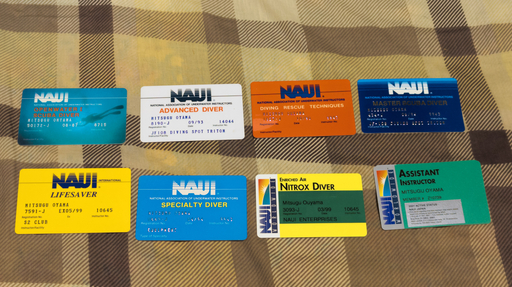

色々整理してたら懐かしいものが出てきた。スキューバダイビングの C カードだ。
他にもスペシャリティは必要だったこともあり受講して済ませているのだけれど、それらのカードは残っておらず、現在残っているのはこの 8 枚だけになる。
ライフセイバーの C カードに記載されたカードの資格失効日が 1999 年 5 月で、アシスタント・インストラクターの資格失効日が 2001 年 12 月 31 日とある 。つまり少なくとも 2001 年 末日にはスキューバ関係の仕事から離れてることがわかる。
少し説明する。現役のアシスタント・インストラクターとして資格更新するためには次の要件を満たす必要がある。
以上を満たして初めてアシスタント・インストラクター資格の更新を申請することができる。
ライフセイバーの資格失効日とアシスタント・インストラクターの資格失効日が噛み合っていないように見える。これは単純に手元に残っているライフセイバーのカードが古すぎるためで更新を怠ったわけではない。
NAUI ではライフセイバーは 2 年ごとに更新、アシスタントインストラクターは毎年更新になる。当然自動更新はない。都度講習を受けるなり評価を受けるなりして更新することになる。
ダイブマスターのカードがないのは結局お金が尽きて取得を断念したから。
つまり 2001 年あたりで自分のショップを開業することをあきらめたことになる。今でもそうだろうが雇われインストラクターになっても生活できない。もともと開業を念頭にアシスタント・インストラクターの資格も得ていた。開業できないならリーダーシップを取得する意味はなかった。